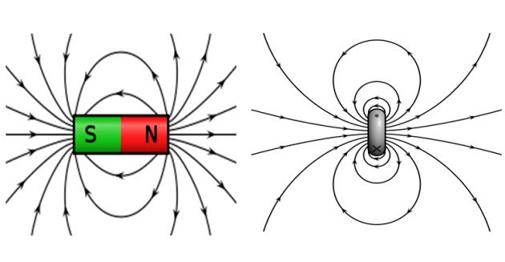
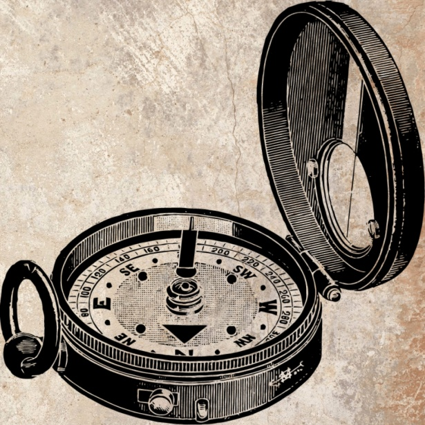
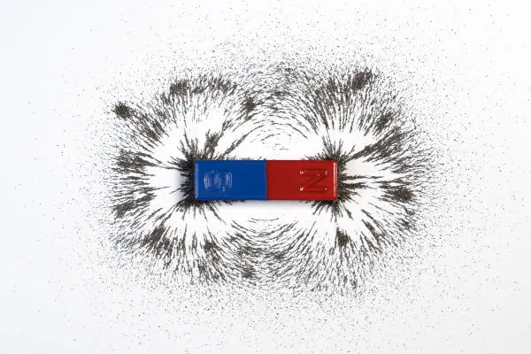
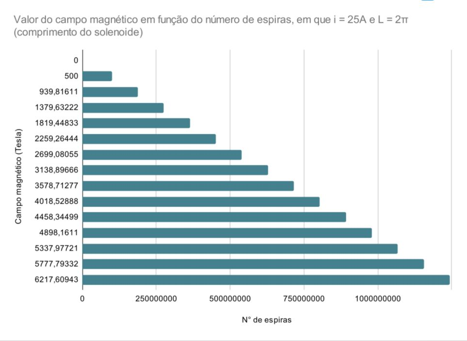
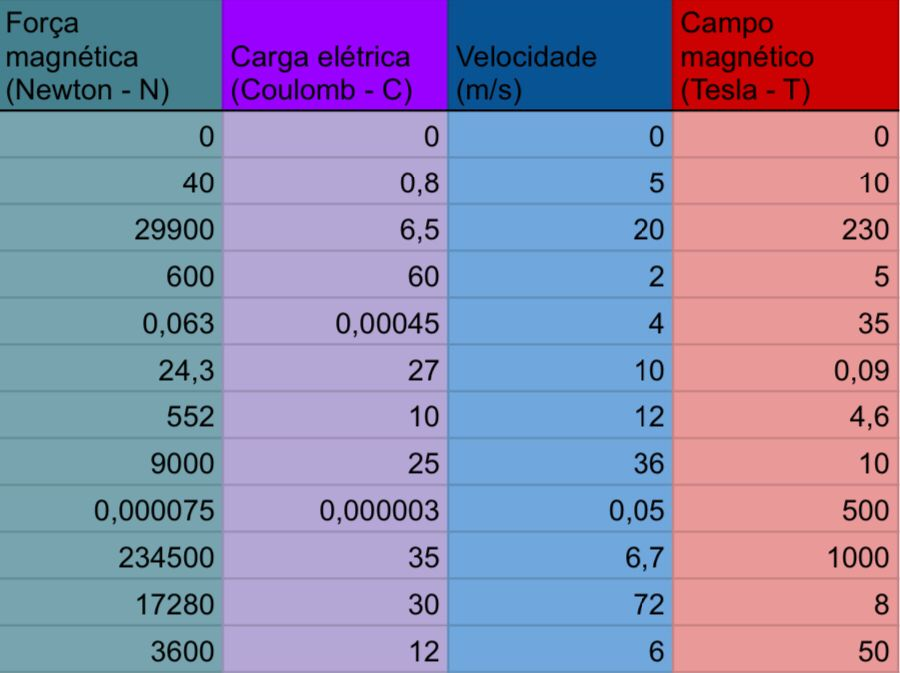
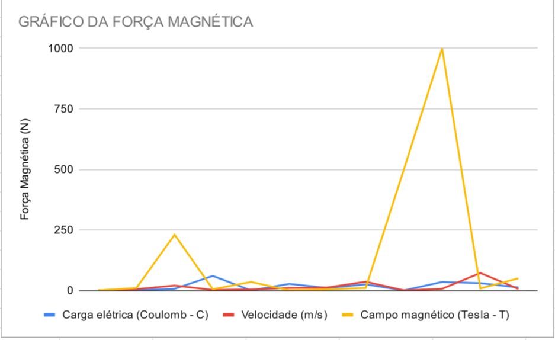

O magnetismo é a área da Física responsável por estudar os fenômenos magnéticos, desde campo e força magnética até a indução eletromagnética de Faraday.
Já o eletromagnetismo, estuda a relação fenômenos vistos em eletricidade e no magnetismo.
O termo magnetismo veio do nome Magnésia, região da Turquia, devido a um minério chamado magnetita com a propriedade de atrair objetos ferrosos à distâcia (sem contato físico).
A Magnetita é um mineral formado pelos óxidos de ferro II e III, cuja fórmula qímica é Fe3O4. Ela apresenta na sua composição, aproximadamente:
- 69% de FeO e 31% de Fe2O3
- 26,7% de ferro e 72,4% de oxigênio
A metodologia de inestigação baseia-se na realização de 2 experimentos (atração dos ímãs e motor homopolar) que mostram, na prática, sobre o magnetismo e eletromagnetismo, além na apresentação de gráficos, resultantes da aplicação das fórmulas.
ÍMÃ: corpo que gera campo magnético ao seu redor. Pode ser classificado como natural, quando se trata de óxido de ferro, ou artificial, quando é construído com ligas metálicas que, ao serem submetidas a fortes campos magnéticos, adquirem propriedades magnéticas. Ele possui características, como:
- Inseparabilidade dos polos: mesmo ao cortar um ímã ao meio, ele terá os polos norte e sul
- Nos polos, a força magnética será mais forte aos demais espaços do ímã
DIPOLO MAGNÉTCO é um vetor que aponta em direção ao polo norte de um campo magnético. Essa grandeza é produzida quando uma carga elétrica se move em circuito fechado, como demonstrado na imagem a seguir:
FORÇA MAGNÉTICA: é o resultado da interação entre dois corpos dotados de propriedades magnéticas, como ímãs ou cargas elétricas em movimento, ou seja, são as próprias forças de atração e repulsão. Há uma fórmula para calculá-la:
F = q.v.B.sen(θ)
F: força eletromagnética (Newton - N)
Q: carga elétrica (Coulomb - C)
V: velociade da carga (m/s)
B: intensidade do vetor campo magnético (Tesla - T)
θ: é o ângulo formado entre a velocidade e o campo magnético
BÚSSOLA: um objeto antigo de localização geográfica, usada até os dias de hoje, que serve para identificar a localização dos pontos cardeais, colaterais e subcolaterais.
A agulha dela é magnética (um pequeno ímã), com pólos norte e sul. Por isso, ela sofre a ação do campo magnético terrestre. Quando a agulha aponta para o pólo norte geográfico ela está, na verdade, apontando para o sul magnético da terra.
Fizemos 2 experimentos para demonstrar o magnetiso e eletromagnetismo:
- ATRAÇÃO MAGNÉTICA
Primeiramente, queimamos o bombril, o que formou o óxido de ferro. (A fonte de calor faz com que as finas fibras de ferro reajam rapidamente com o oxigênio do ar, resultando em óxido de ferro e calor.)
Dessa forma, ao aproximar o ímã do ferro,eles se atraem. Isso ocorre porque o campo magnético produzido pelo ímã imanta o ferro de forma que os seus ímãs elementares se alinham no sentido do campo que é aplicado, ou seja, o ferro se transforma em um ímã, ocorrendo a atração entre o ferro e o ímã.

- MOTOR HOMOPOLAR
Este experimento está relacionado à criação de um motor com o uso dos polos positivo e negativo da pilha.
O conjunto de ímãs de neodímio é ligado ao polo negativo.
O fio de cobre é posicionado de maneira que conecte os dois polos criando, assim, corrente elétrica. E o campo magético criado pelo ímã interage com os elétrons que estão passando ali, resultando no movimento do fio.
A partir dos cálculos com as fórmulas da força magnética e do campo magnético de um solenoide, montamos dois gráficos.
- Campo magnético de um solenóide:
- Força magnética:
B = (µ.N.i)/l
B: valor do campo magnético (Tesla - T)
µ: permeabildade magnética no meio (4π.10-7N.A-2)
i: corrente elétrica (Ampere = A)
N: quantidade de espiras
l: comprimento do soenoide (metros - m)
Adotamos medidas da corrente e comprimento para a realização dos cálculos (i = 25A; l = 2π)
Adotamos medidas fictícias de velocidade, carga elétrica e campo magnético para a realição dos cálculos. Veja abaixo:
 Podemos concluir que não possuímos conclusão rs.
Agradecemos a todos que LERAM até aqui!
ATÉ MAIS !!!

https://brasilescola.uol.com.br/o-que-e/fisica/o-que-e-ima.htm
https://pt.vecteezy.com/arte-vetorial/6355399-tipos-de-imas-conjunto-de-imas-com-bussola-magnetico-poder-design-plano-infografico-para-ciencia-cartoon-vetor-ilustracao-sinal-simbolo-icone-ou-logotipo-isolado-em-conceito-de-diagrama-de-fundo
https://www.lifeder.com/momento-magnetico/
https://beduka.com/blog/materias/
https://brasilescola.uol.com.br/-fisica/campo-magnetico-no-solenoide.htm
https://www.preparaenem.com/-fisica/forca-magnetica.htm